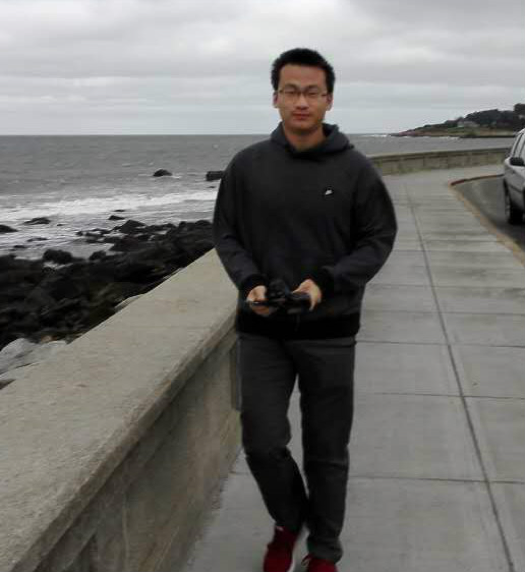

ABOUT

Yihao(Lewis) Feng is a senior undergraduate student at College of Software, Beihang University, China.
My research interests includes Machine Learning and Data mining, especially the fields of Probabilistic Graphical Models and its applications.
This website is designed to show me as a researcher, programmer and passionate Learner.
My research interests includes Machine Learning and Data mining, especially the fields of Probabilistic Graphical Models and its applications.
This website is designed to show me as a researcher, programmer and passionate Learner.
EDUCATION
Beihang University
B.E, Software Engineering, 2012-2016Major GPA 3.85/4, Overall GPA 3.74 /4
Ranking No.4 among 136 students in College of Software.